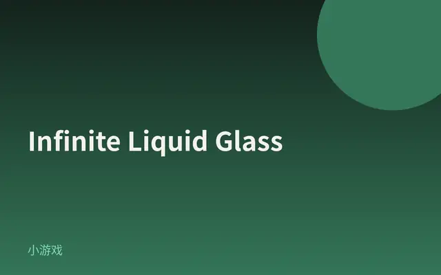
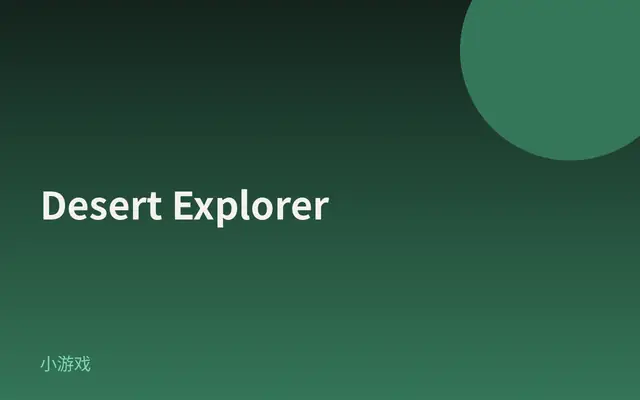
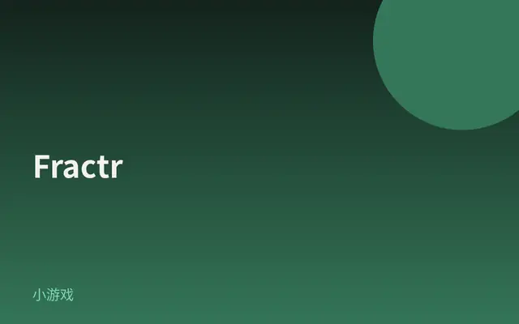
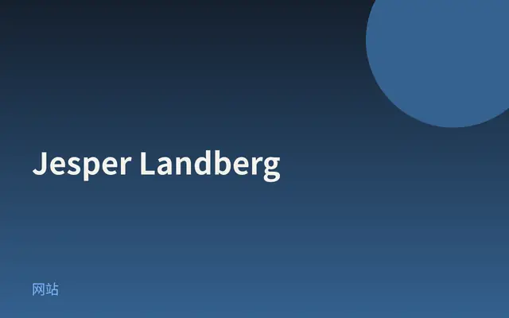
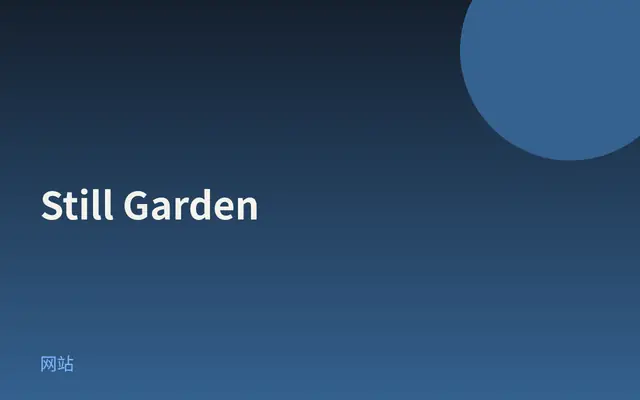
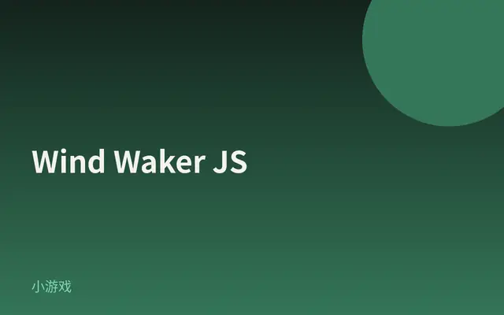

Infinite Liquid Glass
可拖拽的果冻玻璃卡片墙：视频在玻璃里折射，整面网格像布一样晃，WebGPU 一眼炫。

打开网站 ↗它是什么：一面可以拖的「果冻玻璃」卡片墙：每张卡片像厚玻璃，视频在里面弯折、散出彩虹边，整面网格还会像布一样晃。
好在哪：它一眼就炫——没有场景灯光，却全是透亮和反光；拖一下有黏滞回弹，比静态酷站更像玩具。
怎么做到的：
- 玻璃其实是一张平片：用数学算出「到圆角边缘的距离」，再假装出厚度、折射和边缘高光。
- 卡片铺在一个大球面上并首尾相接，所以怎么拖都像没有尽头。
- 后来又在 GPU 上跑了一层布料模拟，网格会滞后、起涟漪，字也跟着玻璃一起扭。
完整技术拆解
今日拆解 · Infinite Liquid Glass
- Live: https://infinite-liquid-glass.shader.se/（同站别名 https://infinite-jelly-glass.shader.se/ 亦 200）
- Author: Shader Development Studio（Filip Kantedal / Jacob / Simon）
- Source / 教程: https://tympanus.net/codrops/2026/09/08/building-an-infinite-liquid-glass-grid-with-three-js-webgpu-and-tsl/
- Bundle: Next.js App Router 产物
/_next/static/immutable/chunks/*.js（含turbopack-*.js） - 证据：对本页 HTML + 主 chunk（含
REVISION:"185"、WebGPURenderer、@pmndrs/glyph、window.next.version:"16.3.0"）的抓取核对；Codrops 教程作对照
为何选它
8 条里它视觉冲击最强：一整面「果冻玻璃」视频卡片，拖一下会像布料一样晃、折射、色散，却没有任何场景灯光。Codrops 2026-09-08 刚拆完，社交向热度也在；比精美落地页更值得当今日最炫。
实际在源码里找到的技术栈
"REVISION",0,"185"；data-engine 写入 three.js r${…REVISION}WebGPURenderer；教程与 meta description 均写 WebGPUMeshBasicNodeMaterial、NodeMaterial、TSL 节点图符号；教程全文用 TSL 写 SDF 玻璃Symbol.for("@react-three/fiber.fromRef")、pmnd.rs R3F docs 链接。具体 semver 未在 bundle 字面量找到 → 教程写 R3F v10，版本号标「推测」createBackend({integration:"@pmndrs/glyph/three"})；MSDF 相关符号密集/_next/static/immutable/…；chunk：window.next={version:"16.3.0",appDir:!0}motionValue、MotionConfigContext、Mini animate()。未找到明确 motion@x.y.z 字面量 → 库确认，版本推测viscosity、bending、anchorDamping、.compute( 与 WGSL compute 路径；教程写明 XPBD cloth solver in TSL compute passesMeshPhysicalMaterial.transmission 主路径（教程明确改用假玻璃 SDF）；未找到 Three.js WebGLRenderer 作为主渲染器字面量核心效果怎么工作（源码 + 标明推测）
1. WebGPU + TSL 假玻璃（确认）
卡片是细分平面，不是厚玻璃网格。用圆角矩形 SDF 算到边缘的距离，再做成高度/法线，在 MeshBasicNodeMaterial 的 colorNode 里做折射采样、Fresnel 环境反射和边缘 rim。场景里没有灯——「亮」全是假出来的。
2. 视频当折射内容（确认）
折射采样的是卡片自己的视频纹理（教程：HLS 流作纹理）。多 tap、不同 IOR → 色边色散。TSL 里用 JS for 展开 tap 次数。
3. 「无限」网格其实在球面上（确认 · 教程 + 结构）
平面坐标 wrap 后映射到大球表面，中间正对你、边缘侧倾缩小；拖出边界的卡片会从另一边接回来。推测：实例化或对象池复用卡片 mesh。
4. 拖拽弹簧（确认库 · 细节推测）
Motion 的 motionValue / pan 手势在 chunk 中出现；教程写 position/velocity 存在 React 外，R3F 帧循环直读、拖拽时零 re-render。
5. 真的「液」——GPU 布料（确认）
教程更新：XPBD cloth，TSL compute。Bundle 里有 viscosity、bending、anchorDamping 与 compute pass。卡片坐在布料补丁上，拖网格会滞后、起涟漪再回弹。文字后来改用 @pmndrs/glyph MSDF，跟着玻璃变形（确认 integration 字符串）。
6. 伪代码（忠实于教程 + bundle 符号）
boot:
renderer = new WebGPURenderer(...) # Three r185
// R3F Canvas on WebGPU
material = MeshBasicNodeMaterial({ colorNode: fakeGlassTSL(...) })
labels = pmndrs/glyph MSDF on cards
fakeGlassTSL(uv):
d = roundedBoxSDF(uv)
height = bevelHeight(d)
normal = finiteDifference(height)
color = chromaticRefract(videoTex, normal, ior, dispersionTaps)
color = mix(color, envSample(reflect), fresnel) + rim(d)
return color
cloth (each frame, GPU):
XPBD / constraint step: distance + bending + anchors + viscosity
write card positions on sphere patch
drag force from Motion pan velocity
drag:
Motion pan → motionValue(x,y) → frame loop reads (no React re-render)如果我来重做（步骤清单）
- Next.js + R3F，主路径只用
three/webgpu+ TSL。 - 先做平面卡片 + SDF 假玻璃 + 视频折射（单 pass，不开灯）。
- wrap 网格映射到球面；Motion pan 驱动偏移。
- 再加 TSL compute 布料（粘度、弯曲、锚点）。
- 标签用
@pmndrs/glyphMSDF，避免 DOM 跟不上布料形变。 - 用
?debug暴露白边、IOR、粘度等参数。
零基础也能看懂。先认识这件作品用到的技术，再学一个知识点。
1技术栈小白版
只列拆解里在源码中确认过的技术。点开看它在这件作品里做了什么。
Three.js r185
在这件作品里整面玻璃卡片墙、球面布局和后来的布料变形，都跑在 Three.js r185 这条管线上。
怎么认出来浏览器里能实时转、拖、晃的 3D，而不是一段固定视频。
WebGPURenderer
在这件作品里主渲染器走 WebGPURenderer，所以上百张会晃的玻璃卡片还能保持流畅。
怎么认出来用较新的 Chrome / Edge 打开更稳；地址栏或控制台有时能看到 WebGPU 相关提示。
TSL（Three.js Shading Language）
在这件作品里圆角玻璃的厚度、折射、彩虹边，都是 TSL 节点算出来的。
怎么认出来玻璃边缘有色散（像棱镜那样的细彩虹），中间视频会弯折。
MeshBasicNodeMaterial
在这件作品里假玻璃的最终颜色写在它的 colorNode 里；场景里可以一盏灯都没有，仍然又亮又透。
怎么认出来画面很亮、很「玻璃」，但你找不着一盏真正的灯具模型。
@react-three/fiber
在这件作品里页面结构用 React / R3F 来组织画布与卡片；拖拽数值则放在 React 外面以免拖一下就整页重绘。
怎么认出来肉眼难辨；它是组织代码的方式，不单独长成一种特效。
@pmndrs/glyph
在这件作品里卡片上的标题说明用 MSDF 字画在场景里，这样布料一晃，字也跟着玻璃一起变形。
怎么认出来字不是网页普通 HTML 叠上去的硬字幕，而会随玻璃一起扭动、折射。
Next.js 16.3.0
在这件作品里整站以 Next App Router 形式发布，地址栏资源路径带 `/_next/static/…`。
怎么认出来打开开发者工具的网络面板，会看到许多 `/_next/` 开头的文件。
GPU cloth / XPBD（粘度·弯曲·锚点）
在这件作品里每张卡片坐在布料补丁上；GPU 上算距离、弯曲、锚点和粘度，所以拖拽有黏滞和涟漪。
怎么认出来松开鼠标后，墙面还会晃几下再停住。
2今日知识点
设计和艺术的区别：设计要解决问题
艺术常常先问：「我想表达什么？」设计常常先问：「谁在用？卡在哪？怎样更顺？」两者都可以很美，但设计的美是为了帮人把事做成。
Infinite Liquid Glass 看起来像纯炫技，它其实在解决一个很具体的问题：工作室有很多带视频的项目，要让访客愿意逛、记得住、还想拖一下。普通缩略图网格能「展示」，却很难「被拿起来玩」。
所以作者选了「果冻玻璃卡片 + 无限拖拽」：玻璃感让视频更贵、更好看；拖拽和回弹让浏览变成身体记忆。美不是目的本身，是解决方案的一部分。
一句话分辨：如果去掉交互与信息结构，只剩氛围——更偏艺术装置；如果氛围是在服务「找到项目 / 愿意停留 / 理解工作室」——那就是设计。
对你有用的判断题：看一个酷站时先问「它在帮谁解决什么？」再问「特效有没有让这件事更容易」。答得清，你就开始用设计师的眼睛看了。
它从哪里来
现代意义上的「设计」（design）在工业革命后越来越强调功能与批量生产中的问题解决，而不只是装饰。
20 世纪的设计教育（例如包豪斯相关传统）反复强调：形式要追随用途，美观与好用不该拆开。
数字产品时代，这个区分更明显：界面可以像艺术品一样精致，但若用户完不成任务，仍会被看作设计失败。
创意前端圈里的「demo」常常骑在艺术与设计之间——今天的案例恰好展示了：最炫的技术，也可以是在回答一个展示与浏览的问题。
经典参考
- Don Norman《设计心理学》（The Design of Everyday Things）入门必读：用门把手、炉灶等例子讲「好用」为什么比「好看」更先要被想清楚。
- Codrops 原文 · Infinite Liquid Glass作者自己说明：这是工作室项目网格的实验，技术选择都服务于「可拖、可看视频、还像玻璃」。
- 包豪斯（Bauhaus）概述 · 百科或博物馆介绍帮助建立「现代设计教育从哪来」的大背景，不必一次读完。
- 打开 Infinite Liquid Glass，拖两下。用一句话写下：它在帮「谁」做「什么事」？（例如：帮访客快速感受工作室的项目质感。）
- 再打开任意一个只有静态大图的作品集站，对比：哪一个更容易让你停留超过 30 秒？你的身体（拖、滑）有没有被邀请参与？
- 最后问自己：如果把玻璃特效全关掉、只留普通方格缩略图，这个站要解决的问题还成立吗？成立多少——这就是「设计还是纯炫」的刻度。
小词典
- 设计
- 为特定的人解决特定问题，并让解决方案好用、好懂；美观通常是手段之一。
- 艺术
- 更自由地表达感受、观点或形式探索；不一定要帮别人完成任务。
- 用例 / 使用情境
- 「谁在什么场合要完成什么」——设计决策的出发点。
- 示能（affordances）
- 物品看起来就提示你能怎么用；比如卡片墙「看起来就能拖」。
3知识地图进度







设计雷达 · 每天 8 个值得看的网站、App UI 和网页小游戏